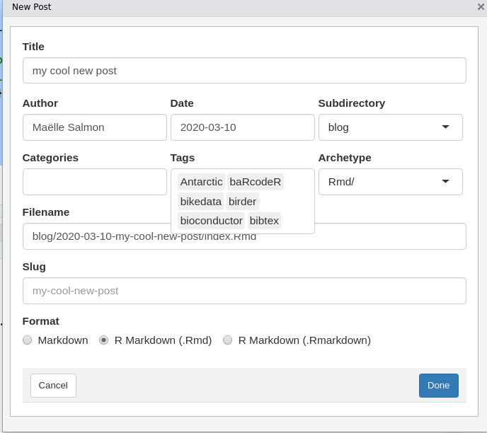
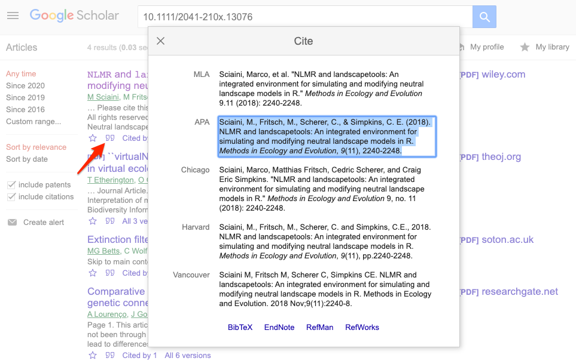

2 Technical Guidelines
This chapter explains the technical details of submitting a blog post or tech note (referred to collectively as “posts”) for publication on the rOpenSci website - from drafting in an (R) Markdown template, to submitting for review using GitHub Pull Request infrastructure.
We include advice on commonly used elements like adding an image, a citation, or embedding a tweet in case you need them.
Briefly, the process is:
- Get the go-ahead and a tentative publication date from our Community Manager Stefanie Butland.
- Fork the repository (repo) of the rOpenSci website.
- Draft your post in R Markdown or Markdown and create or update your author metadata.
- Preview and refine your post locally.
- Submit via pull request and preview your post.
- A blog editor reviews your post.
- Revise your post in response to review.
This chapter links to templates for posts and checklists that you can also find in the Appendix.
2.1 Fork the roweb3 repository
Fork the rOpenSci website repository and create a new branch to work on your post. For help with this aspect of git/GitHub, we recommend happygitwithr and the pull request helpers of the usethis package.
2.3 Post template
Start your post from a template. If you use RStudio, refer to the instructions to create your draft with blogdown’s New Post Addin. If not, refer to the instructions to create your draft manually.
2.3.1 New Post Addin
The blogdown New Post RStudio addin creates the post draft in the correct location and fills the post YAML based on metadata you’ll have entered.1
- Install
whoami(install.packages("whoami")), andblogdownabove version 1.1.10 (at the moment of writing, only available from GitHub, soremotes::install_github("rstudio/blogdown")). - Install Hugo (to preview the post):
blogdown::install_hugo(). - Re-start R.
- In RStudio, open the forked
roweb3project. - Create a new post by running Addins > New Post or
blogdown:::new_post_addin(). - Leave “Categories” blank.

- Enter a title, no need to worry about title case at this stage.
- Enter your name if
whoamiwasn’t able to guess it. - Choose the correct date.
- Enter a new slug if the default one is too long.
- Choose “blog” as a Subdirectory from the drop-down menu.
- Choose an Archetype, Rmd or md, from the drop-down menu.
- Also choose the correct Format: .Rmd if Rmd, Markdown (.md) if md. Never choose .RMarkdown.
- Ignore Categories.
- Select “tech notes” tag if this is a tech note
- Select any other relevant tags and/or create new ones
- Click on “Done”, your post draft will have been created and opened.
2.3.2 Manually
Create a folder YYYY-MM-DD-slug/ (e.g. 2020-01-20-rorcid/) under /content/blog/
Your post source and its images should live in /content/blog/YYYY-MM-DD-slug/.2
R Markdown template is to be saved as
/content/blog/YYYY-MM-DD-slug/index.Rmd. It will need to be knit (RStudio knit button, orrmarkdown::render(<path_to_file>)). Add bothindex.Rmdandindex.mdto your PR.Markdown template is to be saved as
/content/blog/YYYY-MM-DD-slug/index.md.
2.4 Adding content
2.4.1 YAML
The YAML sets the metadata for a post. This is the YAML from our post template, with comments to explain some components:
---
slug: "post-template"
title: Post Title in Title Case
# Delete the package_version line below if your post is not about a package
package_version: 0.1.0
author:
- Author Name1
- Author Name2
# Set the date below to the publication date of your post
date: 2020-03-10
# Minimal tags for a post about a community-contributed package
# that has passed software peer review are listed below
# Consult the Technical Guidelines for information on choosing tags
tags:
- Software Peer Review
- packages
- R
- community
# The summary below will be used by e.g. Twitter cards
description: "A very short summary of your post (~ 100 characters)"
# If you have no preferred image for Twitter cards,
# delete the twitterImg and twitterAlt lines below
# - Replace "blog" with "technotes" as needed
# - Note "/" between year/month/day
twitterImg: blog/2019/06/04/post-template/name-of-image.png
twitterAlt: "Alternative description of the image"
# the text below is for populating the "share on Twitter" button
# if deleted, the title of the post will be used
tweet: "A post about blabla by @username!"
---2.4.1.2 Twitter cards metadata (optional)
If you’re curious about the description, twitterImg, twitterAlt YAML fields in the post metadata and how they can help draw readers to your post, refer to our explanation of Twitter cards.
Delete description, twitterImg and twitterAlt YAML fields if you don’t use them.
2.4.1.3 Default Twitter text (optional)
Provide default text for tweets when a reader clicks the “Share on Twitter” button by
replacing the value of tweet: "A post about blabla by @username!".
Consider including your (and your coauthors) Twitter handle(s) (@username) in the tweet
text to ensure you get notified when someone shares your post.
2.4.2 Images - General
Images can either be external or created in rmarkdown. Regardless of how images are included, they should all contain alt text and consider the following features.
Alt text
Every image should be accompanied by alternative text to make it more accessible to people with disabilities and provide a better user experience for everyone.
The alternative text should convey the meaning or content that is displayed in the image.
Refer to this tutorial for details on what should go in alternative text,
and see the following sections for how to include alt text.
Image features
- Consider transparent backgrounds as the blog background is not white (hex logos etc. will look better this way)
- Keep images < 1 mb
- Large images can be compressed/optimized with tools like
- OptiPNG (Local software, also integrates with rmarkdown)
- minimage (Local software)
- TinyPNG (Online tool)
2.4.3 Images - External
This section refers to images that are not generated from R Markdown. If you want to generate images from R Markdown use our R Markdown template and see next subsection.
File location
All images go in the same folder as your post source (/content/blog/YYYY-MM-DD-slug/)
(do not link to external services like imgur).
To reference them in your post, use name-of-image.png.
Insert an image
-
Insert an image with either
figureorimgtxtshort codes- Note the use of
alt =to specify alt text {{< figure src = "image-name.png" alt = "informative description" >}}{{< imgtxt src = "image-name.png" alt = "informative description">}} Text to right {{< /imgtxt >}}
- Note the use of
Image placement
-
Basic positioning with
{{< figure >}}andclass{{< figure src = "image-name.png" alt = "informative description" class = "center" >}}-
pull-left- Left-align the picture and wrap text around it -
center- Center the picture (no text wrapping) -
pull-right- Right-align the picture and wrap text around it
-
-
Specific text next to image with
{{< imgtxt >}}{{< imgtxt src = "image-name.png">}} Text to right {{</ imgtxt >}} Text below- Only text between
{{< imgtxt >}}and{{</ imgtxt >}}is to the right of the figure
- Only text between
- For images side-by-side, create a composite and insert as a single image
Other details
Control image size with
width{{< figure src = "image-name.png" width = "400" alt = "informative description">}}Make the image a hyperlink with
link{{< figure src = "image-name.png" alt = "informative description" link = "http://hyperlink">}}
Important! In R Markdown (i.e. in *.Rmd files but NOT *.md files), these Hugo shortcodes need to be escaped:
<!--html_preserve-->{{< figure src = "name-of-image.png" width = "400" alt = "informative description">}}<!--/html_preserve-->
2.4.4 Images - Rmd-created
File location
When using our R Markdown template the knitr hook in the setup chunk actually creates the necessary Hugo shortcodes.
Therefore you don’t need to worry about paths.
Image details
In the chunk producing a figure, use the hugoopts chunk option to control the alt text and other elements.
hugoopts is a named list that can have all elements described in the documentation of the Hugo figure shortcode except for title.
```{r chunkname, hugoopts=list(alt="alternative text please make it informative", caption="this is what this image shows, write it here or in the paragraph after the image as you prefer", width=300)}
plot(1:10)
```This chunk above produces a figure with “alternative text please make it informative” as alternative text, “title of the image” as title, “this is what this image shows, write it here or in the paragraph after the image as you prefer” as caption, and a width of 300 pixels.
2.4.5 Citations
To add citations, refer to them in the body of your post:
Citation of the primary literature[^1].
Citation of an R package[^2].
Citation of a website[^3].And list your sources at the bottom of your post:
[^1]: Sciaini, M., Fritsch, M., Scherer, C., & Simpkins, C. E. (2018). NLMR and landscapetools: An integrated environment for simulating and modifying neutral landscape models in R. Methods in Ecology and Evolution, 9(11), 2240-2248. <https://doi.org/10.1111/2041-210X.13076>
[^2]: Elin Waring, Michael Quinn, Amelia McNamara, Eduardo Arino de la Rubia, Hao Zhu and Shannon Ellis (2019). skimr: Compact and Flexible Summaries of Data. R package version 2.0.2. https://CRAN.R-project.org/package=skimr
[^3]: Hugo static site generator. https://gohugo.io/2.4.5.1 Finding citations
To get the citation for an R package, run citation("packagename").
To get the citation for an article, you can use the RStudio Addin for rcrossref, or get the citation from a paper’s DOI by running e.g.
rcrossref::cr_cn("10.1111/2041-210X.13076", format="text", style="apa")
[1] "Sciaini, M., Fritsch, M., Scherer, C., & Simpkins, C. E. (2018). NLMRandlandscapetools: An integrated environment for simulating and modifying neutral landscape models inR. Methods in Ecology and Evolution, 9(11), 2240–2248. doi:10.1111/2041-210x.13076"To get the citation for an article in Google Scholar, find the article, click the quote symbol (in search results under the article) to open the “Cite” window, and copy the APA style text.

2.4.6 Embedded tweets
Use a Hugo shortcode to embed a tweet using its ID e.g. {{< tweet 1138216112808529920 >}}. In R Markdown, shortcodes need to be html escaped, refer to the template for an example.
2.4.7 Examples
Comparing the raw Markdown to the live posts in these examples might be helpful.
A blog post about a package that has passed software peer review. Compare raw markdown with the live post.
A tech note. Compare raw markdown with the live tech note.
2.5 Style Guide
- For formatting of package names, functions, and code, follow the tidyverse style guidance. Format package names as regular text (no quotes).
- Do not use markdown in titles (but you can use them in headings).
- Use ## and ### to format headings in your post, i.e. section titles as ## (h2) and subsections as ### (h3), #### (h4).
- Use title case for the title of your post; use sentence case for headings inside the post.
- ‘rOpenSci’ not ‘ROpenSci’
- When adding rOpenSci links to your post, use relative instead of absolute URLs e.g.
/blog/instead ofhttps://ropensci.org/blog/. - When linking to rOpenSci packages use their docs.ropensci.org URL, e.g. https://docs.ropensci.org/drake/.
- Use Hugo shortcodes (not html) to add images, tweets, gists etc.
- In R Markdown wrap Hugo shortcodes between html preserve tags as shown in the template.
- Instead of using html widgets (
DT,leaflet, etc.), include a screenshot and use thelinkoption of the Hugofigureshortcode to direct readers to an online version of the widget. - Use informative alternative text for all images.
- Add new line at end of each sentence (makes diffs easier to interpret and easier for editor to suggest specific changes).
2.6 Pre-submission checks
2.6.1 Knit post
If using the R Markdown template, knitting index.Rmd (RStudio knit button, or rmarkdown::render(<path_to_file>)) will generate both index.md and index.html (
index.html will be ignored, but we need an index.md). Commit both index.Rmd and index.md.
2.6.2 Check with roblog
You can use functions in the roblog package to do some automated checks on your post.
-
ro_lint_md()to check and enforce use of complete alternative descriptions for image, of relative links to rOpenSci website, of Hugo shortcodes for tweets, of lower camelCase for rOpenSci name -
ro_check_urls()to check for URLs that might be broken
2.6.3 Author Checklist
Pick the appropriate checklist for your post and ensure you checked everything off. Hover the mouse over the list and a copy-paste button will appear at the top-right corner of the shaded area.
2.6.3.1 Posts on peer-reviewed packages
* [ ] I have read the Content Guidelines.
* [ ] I have read the Technical Guidelines.
* [ ] I used or followed the R Markdown or Markdown template.
* [ ] I have followed the Style Guide.
* [ ] I created or updated my author metadata with correct folder name.
* [ ] I have added relevant tags after browsing existing tags (incuding "community" tag).
* [ ] I have added the "tech notes" tag if this is a technote.
* [ ] I ran `roblog::ro_lint_md()` on index.md (optional).
* [ ] I ran `roblog::ro_check_urls()` on index.md (optional).
* [ ] I ran a spell-check on index.md.
* [ ] I have added the tags - Software Peer Review, my-packagename.
* [ ] I have added the package-version YAML tag.
* [ ] I have added acknowledgement of the reviewers' work (with links to reviewers).
* [ ] I have added a link to the software peer review thread.
* [ ] I ran a spell-check on index.md.2.6.3.2 Other posts
* [ ] I have read the Content Guidelines.
* [ ] I have read the Technical Guidelines.
* [ ] I used or followed the R Markdown or Markdown template.
* [ ] I have followed the Style Guide.
* [ ] I created or updated my author metadata with correct folder name.
* [ ] I have added relevant tags after browsing existing tags (incuding "community" tag).
* [ ] I have added the "tech notes" tag if this is a technote.
* [ ] I ran `roblog::ro_lint_md()` on index.md (optional).
* [ ] I ran `roblog::ro_check_urls()` on index.md (optional).
* [ ] I ran a spell-check on index.md.2.6.4 Local preview
If you wish to preview your post locally, as it will appear in our site, you must install Hugo.
To install, refer to Hugo docs or run blogdown::install_hugo().
Note: You can also preview your blog post online through the pull request before the final submission
Then run hugo serve in the repo directory to start a local server on http://localhost:1313.
The version of Hugo used by the rOpenSci web server is defined in netlify.toml.
When this preview looks good to you, you should submit your post as a pull request.
2.7 Submit draft post
2.7.1 Create draft pull request
Open a draft pull request (PR) from your fork (using the web interface, see step 8 for creating a draft), or
usethis::pr_push()that will save you some work and that will in the end open the same web interface where you can choose Draft PR in the last step)If you opened a PR instead of a draft PR, you can convert it to a draft by clicking on “Still in progress? Convert to draft” on the right panel under “Reviewers”.
2.7.2 Add checklist
In the first comment of your pull request submitting a post, please copy-paste the checklist corresponding to your post and check off the items.